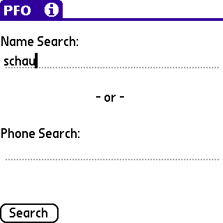
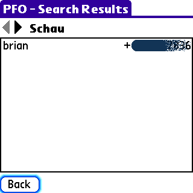
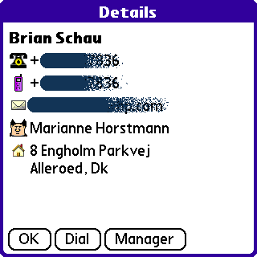
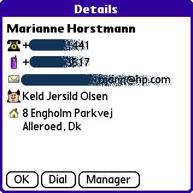
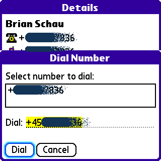
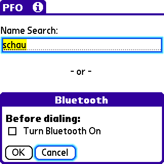

User Guide |
After installation of the PeopleFinder Offline for Palm OS program you will find the application in the Unfiled category on your handheld - the application is named PFO. Move the application to whatever category you like.
Launch PFO.

In PFO you can do either a Name Search or a Phone search. The name search is a surname givenname search and you can enter as much as you like. PFO will match as much of each part as possible.
Examples:
| Search Term | Description | |
|---|---|---|
| schau | Return all persons where the surname matches schau. Examples are schau, schaub, schaubeck, schauble etc). | |
| schau b | Return all persons where the surname matches schau and the givenname begins with b. | |
| schau brian | Exact match - returns me :-) |
When searching for a phone number only the exact match (if found) will be returned. Remember to supply country dialing code! It is only necessary to supply the digits - other characters are filtered out and are not considered. Example: 4512345678, +4512345678 and +45 1234 5678 will all return the same match (if found).

PFO will return as many results as possible. Each result page lists the Surname and will list the persons matching that Surname (and optionally givenname). Also the primary phone number for that person will be shown.

Selecting a name from the list brings up a detailed view for that person. The information (from top to bottom) are: Primary Phone, Mobile Phone, Email Address, Manager and Street Address.

Tapping the Manager button brings up details about the Manager of this person. You can keep tapping till you reach the top ...

Tapping the Dial button brings up the Dial dialog. If you run PFO on, say, a Treo 600/650 you can call the person up directly from PFO! If you have a Bluetooth enabled handheld and a Bluetooth enabled phone you can setup a phone link and still use PFO to connect to a certain individual.

By installing BtToggle Classic or BtToggle Pro from Whizoo you can turn on Bluetoooth before dialing from PFO.